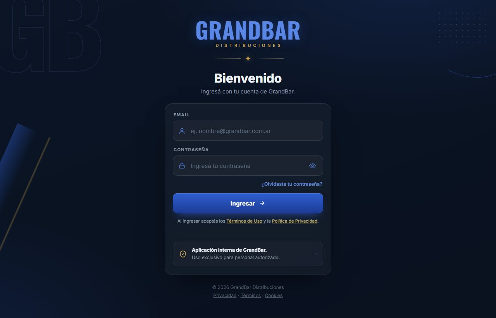
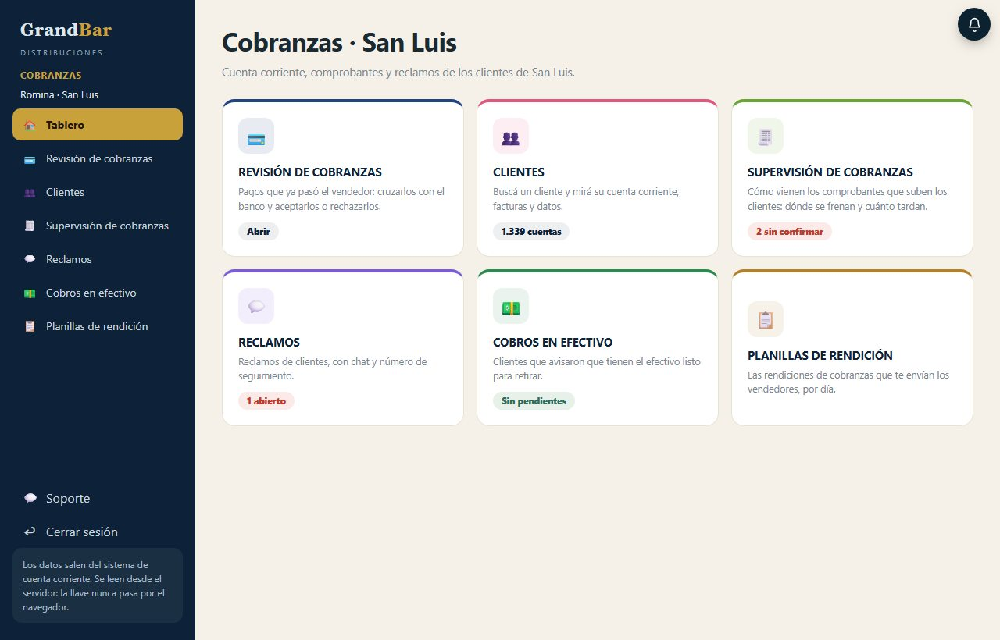
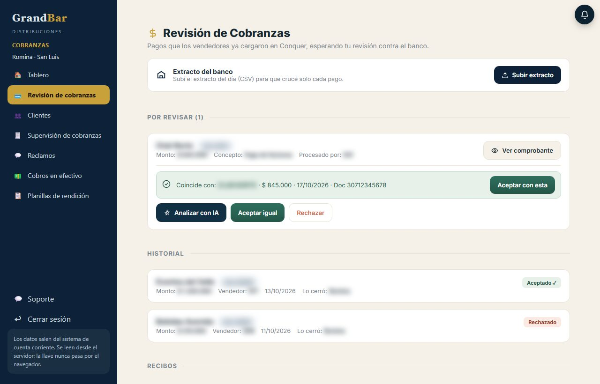
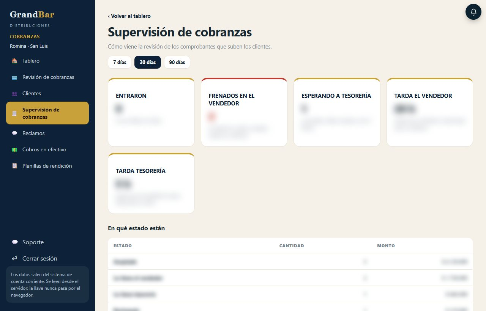
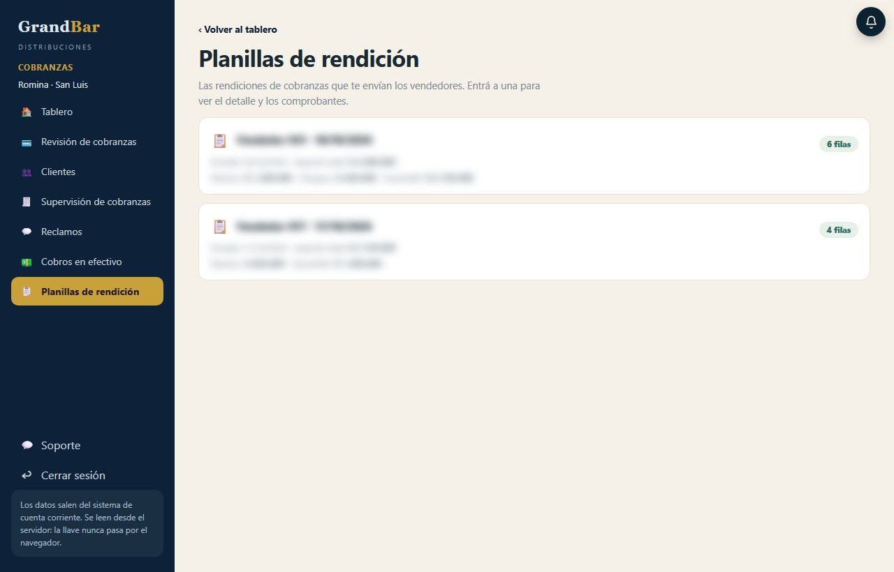
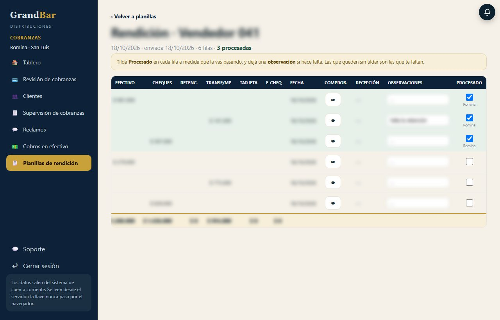
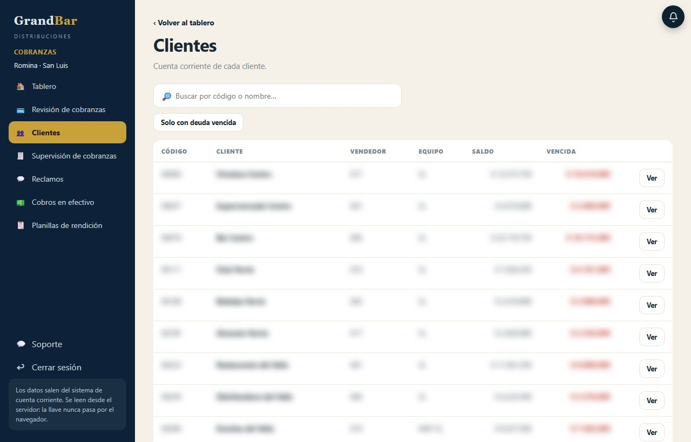
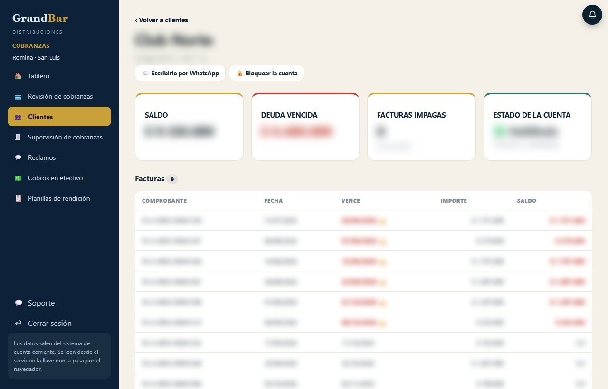
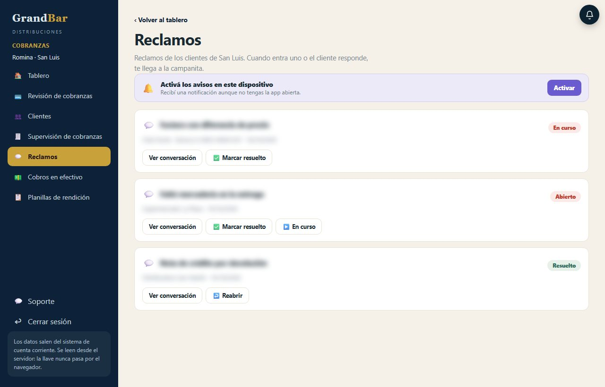
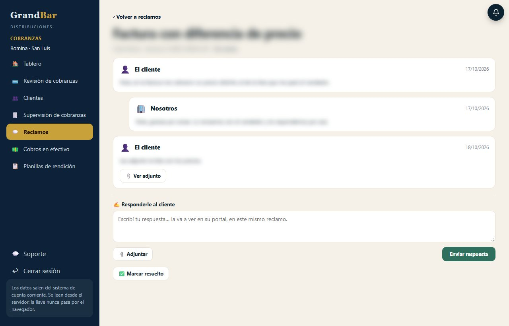

Cómo usar el panel de Cobranzas del Portal GrandBar desde la administración de San Luis: revisar los pagos contra el banco, seguir la cuenta de cada cliente, los cobros en efectivo, las planillas de los vendedores y los reclamos, pantalla por pantalla.
Para Romina, administración San LuisVersión octubre 2026Ayuda WhatsApp +54 9 261 245-2651
Parte I · Empezar
01
Entrar al portal
Con tu email de GrandBar y tu contraseña. Entrás directo a tu panel de Cobranzas.
En Email escribí administracionsl@grandbar.com.ar.
Escribí tu contraseña. El ojo del costado la muestra, para que veas si está bien escrita.
Tocá Ingresar. Entrás directo a la Revisión de cobranzas, que es lo que vas a usar todos los días (sección 4).
Si te olvidaste la contraseña
Escribí tu email y tocá ¿Olvidaste tu contraseña?. Se abre WhatsApp con soporte, con el pedido ya escrito, y te la restablecen.
Una cuenta por navegador
El navegador guarda una sola sesión del portal. Si en otra pestaña alguien entra con otra cuenta, arriba aparece un aviso para actualizar. Para tener dos cuentas abiertas a la vez, usá otro perfil de Chrome o una ventana de incógnito.

Figura 1 · La pantalla de ingreso de portalgrandbar.com.↑ Índice
Parte I · Empezar
02
El panel: menú, tablero y avisos
Todo tu trabajo está en un solo panel, con el menú siempre a la izquierda.
El menú. Tablero te muestra todo de un vistazo; las demás opciones son las secciones de esta guía.
Tu nombre y tu zona: Romina · San Luis. En todo el panel ves solo lo de San Luis (abajo, qué quiere decir eso).
Cada tarjeta del tablero abre su sección y dice cómo viene: comprobantes sin confirmar, reclamos abiertos, cobros en efectivo pendientes. En rojo, lo que espera algo.
La campanita. El número rojo cuenta los avisos nuevos y se actualiza solo cada minuto. Ahí te llega cada reclamo nuevo de San Luis (sección 10).

1234
Figura 2 · El tablero. Los números de las tarjetas son de ejemplo.
Qué es "San Luis" en el panel
Son los clientes que en el sistema de la empresa (CUBO) están en el equipo SL o MAY SL: los de los vendedores 006, 010, 017, 041 y 043, y los mayoristas 008 y 032. Sus pagos, reclamos, cobros en efectivo y planillas son los que te aparecen a vos. Lo de Mendoza lo sigue viendo Mónica.
Si un cliente que es de San Luis no te aparece, fijate en CUBO en qué equipo está cargado: el panel sigue lo que dice CUBO y se actualiza solo cada hora.
Soporte y cerrar sesión
Soporte
Abajo del menú. Abre WhatsApp con el equipo de sistemas, para cualquier problema con el portal.
Cerrar sesión
Abajo de todo en el menú. Hacelo siempre que uses una compu que no sea la tuya.
Un pago pasa por tres manos antes de cerrarse. Vos sos la última.
1 · El cliente
Sube el comprobante
Desde su Portal del Cliente (portalclientegrandbar.com) informa la transferencia y adjunta el comprobante.
2 · El vendedor
Lo carga en Conquer
Lo ve en su pantalla de Cobranzas, lo carga en Conquer y lo marca como procesado.
3 · Vos
Lo cruzás con el banco
Te aparece en Revisión de cobranzas: lo comparás con el extracto del banco y lo aceptás o lo rechazás.
El cliente ve en su portal en qué paso está su pago, hasta que queda Aceptado o Rechazado, que es lo que decidís vos.
Aceptar no baja la deuda
Aceptar un pago confirma que la plata entró. La deuda del cliente baja cuando el pago está cargado en el sistema de la empresa: el portal se actualiza con el sistema cada hora. Por eso un cliente puede seguir viendo deuda un rato después de que aceptaste su pago.
Los pagos de clientes de San Luis que el vendedor ya cargó en Conquer y esperan tu revisión contra el banco.
Subir extracto: subí el extracto del banco del día, en CSV. El panel toma solo los créditos (las transferencias que entraron) y busca solo con qué pago coincide cada uno. Si subís dos veces el mismo extracto, no se duplica nada.
Cada pago por revisar: el cliente con su código, el monto, el concepto y qué vendedor lo procesó. Ver comprobante abre lo que subió el cliente.
Si hay una transferencia del banco por el mismo monto exacto, aparece en verde con el nombre, la fecha y el documento de quien transfirió. Si es la correcta, tocá Aceptar con esta: el pago queda aceptado y esa transferencia queda usada.
Las otras opciones del pago: Analizar con IA, Aceptar igual y Rechazar (abajo, qué hace cada una).
El Historial: los pagos que ya se cerraron, con quién los cerró. Más abajo, los Recibos que se emitieron a los clientes.

12345
Figura 3 · Revisión de cobranzas, con un pago por revisar que coincide con una transferencia del banco. Los datos están difuminados.
Antes de aceptar
La coincidencia se busca solo por el monto. Antes de tocar Aceptar con esta, mirá que el nombre y la fecha de la transferencia sean de ese cliente.
Analizar con IA lee el comprobante que subió el cliente y te muestra el monto que dice, la fecha, el banco, el titular y el número de operación. Si el monto no coincide con el que informó el cliente, o algo no se lee bien, lo marca como Revisar.
Si no aparece la coincidencia pero lo verificaste a mano en el banco, usá Aceptar igual.
Si el cliente pagó una parte con su saldo a favor, el pago lo dice en verde ("Usó saldo a favor"): el monto transferido puede ser menor que el de las facturas.
Rechazar
Rechazar cuando la plata no entró o el comprobante no corresponde. El cliente lo ve como rechazado en su portal. Si ese pago usaba saldo a favor, el saldo vuelve a quedar disponible para el cliente.
Se cierra una sola vez
Aceptar y rechazar no se pueden deshacer desde el panel. Si te equivocaste, escribile a soporte con el cliente y el monto.
Cómo viene el camino de los pagos de San Luis: dónde se frenan y cuánto tarda cada paso.
El período: los últimos 7, 30 o 90 días.
Los números: cuántos comprobantes entraron, cuántos están frenados en el vendedor, cuántos te esperan a vos, y cuánto tardan en promedio el vendedor y tesorería.
Más abajo, las tablas: en qué estado está cada uno, los que están trabados (quién lo tiene y hace cuántos días), quién los cerró en tesorería y qué vendedor los confirmó.

123
Figura 4 · Supervisión de cobranzas. Los números están difuminados.
Sirve para ver, por ejemplo, qué vendedor tiene comprobantes sin cargar en Conquer desde hace días: con eso le podés avisar antes de que el cliente reclame.
Las rendiciones de cobranzas que te mandan los vendedores de San Luis, una por vendedor y por día.
Cada planilla dice el vendedor, el día, cuándo la mandó, cuántas filas tiene y el total por medio de pago (efectivo, cheques, retenciones, transferencia o Mercado Pago, tarjeta y e-cheq). Tocala para ver el detalle.

Figura 6 · La lista de planillas. Los datos están difuminados.
El detalle de una planilla
Cada fila es un cobro: el cliente, la factura, el importe y cómo se pagó, con el comprobante y la recepción para ver. Si una transferencia o un cheque tiene varios importes, aparece el total con la cantidad entre paréntesis; pasá el mouse por encima para ver el detalle.
Observaciones: escribí lo que haga falta en esa fila (por ejemplo, que falta una retención). Se guarda al salir del recuadro.
Procesado: tildalo a medida que vas pasando cada fila. Debajo queda tu nombre y la fila se pinta de verde. Las que quedan sin tildar son las que te faltan.

123
Figura 7 · El detalle de una planilla, corrido a la derecha: las tres primeras filas ya están procesadas. Los datos están difuminados.↑ Índice
Parte III · Clientes
08
Clientes
La cuenta corriente de cada cliente de San Luis, con los que más deben primero.
El buscador: escribí el código o parte del nombre y apretá Enter.
Solo con deuda vencida deja solo a los que tienen algo vencido. Tocalo de nuevo para ver a todos.
La lista: código, cliente, vendedor, equipo (SL o MAY SL), saldo y deuda vencida. Se ven de a 50; abajo están los botones para pasar de página.
Ver abre la ficha del cliente (sección 9).

1234
Figura 8 · Clientes. Los datos están difuminados.
Saldo y deuda vencida
El saldo es lo que el cliente debe en total, ya descontado su saldo a favor. La deuda vencida son todas sus facturas vencidas, sin descontar el saldo a favor, porque el cliente lo usa cuando quiere. Por eso a veces la vencida es más alta que el saldo. Es la misma cuenta en todos los paneles de la empresa.
Todo lo de un cliente en una pantalla: su cuenta, sus facturas, lo que subió y lo que reclamó.
Escribirle por WhatsApp abre una conversación con el cliente. Bloquear la cuenta no le deja hacer pedidos desde su portal hasta que lo des de alta con Dar de alta; puede seguir entrando para ver su cuenta y pagar, y en Conquer no cambia nada.
Los números: saldo, deuda vencida, cuántas facturas tiene impagas y si su cuenta del portal está habilitada o bloqueada.
Las facturas: comprobante, fecha, vencimiento, importe y saldo. Las vencidas con saldo aparecen en rojo, con una señal de alerta.

123
Figura 9 · La ficha de un cliente. Los datos están difuminados.
Más abajo en la ficha están los comprobantes que subió el cliente (con su estado y quién lo cerró) y sus reclamos; Abrir te lleva a la conversación del reclamo (sección 11).
Los reclamos que abren los clientes de San Luis desde su portal, cada uno con su propio chat.
El cliente entra a Reclamos en su Portal del Cliente, toca Nuevo reclamo, pone el asunto y cuenta qué pasó. El reclamo queda con un número de caso y te aparece acá.
Activá los avisos en este dispositivo: tocá Activar y aceptá el permiso del navegador. Desde ahí, cada reclamo nuevo te llega como notificación a la compu (o al celular, si lo activás también ahí), aunque no tengas el portal abierto. Se hace una vez por dispositivo.
El estado de cada reclamo: Abierto (nadie lo tomó), En curso (ya le respondiste) o Resuelto.
Ver conversación abre el chat (sección 11). Desde la lista también podés marcarlo resuelto, ponerlo en curso o reabrirlo.

123
Figura 10 · Reclamos, con el aviso para activar las notificaciones. Los datos están difuminados.
Cómo te enterás de un reclamo nuevo
Cada 10 minutos el portal revisa si un cliente de San Luis abrió un reclamo o respondió en uno que ya tenía. Si pasó, te avisa en la campanita ("Reclamo nuevo" o "Respondió en el reclamo", con el número y el cliente) y, si los activaste, con una notificación. Tocá el aviso para ir directo a Reclamos.
Lo que le escribís acá, el cliente lo ve en su portal, en el mismo reclamo.
La conversación: lo que escribió el cliente y lo que respondimos nosotros, con la fecha. Si mandó un archivo, Ver adjunto lo abre.
Escribí la respuesta en el recuadro.
Adjuntar suma una foto o un PDF de hasta 5 MB. Enviar respuesta la manda. Si el reclamo estaba abierto, pasa solo a En curso.
Cuando quedó solucionado, Marcar resuelto. Si hace falta, se puede reabrir.

1234
Figura 11 · La conversación de un reclamo. Los datos están difuminados.
Se actualiza solo
Si el cliente escribe mientras tenés la conversación abierta, su mensaje aparece solo, y lo que estabas escribiendo no se pierde. Si el cliente reabre un reclamo resuelto desde su portal, vuelve a Abierto.
Para cualquier problema con el portal, tocá Soporte abajo del menú: abre WhatsApp con el equipo de sistemas (+54 9 261 245-2651).
¿Por qué no veo clientes de Mendoza?
Tu usuario es de San Luis: el panel te muestra solo los clientes que en CUBO están en el equipo SL o MAY SL. Lo de Mendoza lo ve Mónica.
Un cliente de San Luis no me aparece.
Fijate en CUBO a qué equipo está asignado. Si está en otro equipo, para el panel es de Mendoza. Cuando lo corrijan en CUBO, aparece solo en la hora siguiente.
Acepté un pago y la deuda del cliente no bajó.
Es normal. Aceptar confirma que la plata entró; la deuda baja cuando el pago está cargado en el sistema de la empresa, y el portal se actualiza con el sistema cada hora.
No aparece la coincidencia con el banco.
Revisá que hayas subido el extracto del día en el que entró la transferencia. La coincidencia se busca por el monto exacto: si el cliente transfirió otro monto, no va a aparecer. Si lo verificaste a mano, usá Aceptar igual.
Me equivoqué al aceptar o rechazar un pago.
Desde el panel no se puede deshacer. Escribile a soporte con el cliente y el monto.
No me llegan los avisos de reclamos.
La campanita los muestra siempre que tengas el portal abierto. Para que te lleguen con el portal cerrado, tenés que tocar Activar en Reclamos y aceptar el permiso del navegador, en cada compu o celular. Si el navegador tiene las notificaciones bloqueadas para el portal, el botón no aparece: habilitalas en la configuración del navegador.
¿Lo que hago lo ve el cliente?
Sí: si aceptás o rechazás un pago, el cliente ve el estado en su portal; si respondés un reclamo, ve tu respuesta en el mismo reclamo. Lo demás (observaciones de las planillas, Supervisión) es solo interno.